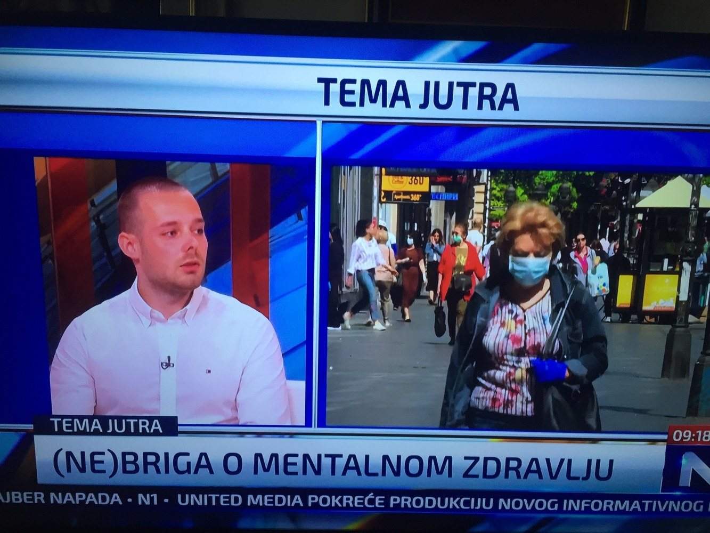
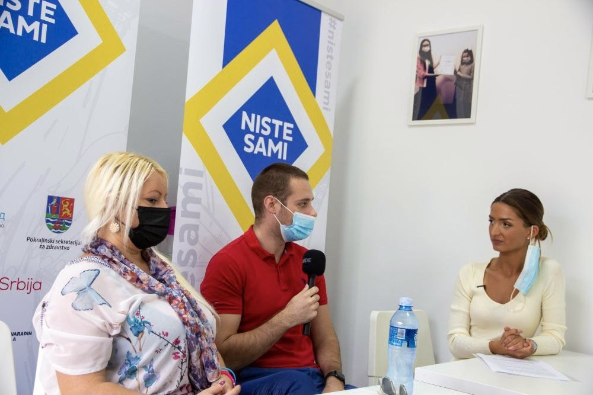

Media & public work
Public conversations about mental health, burnout, radno pressure, emotional wellbeing, and psychologically informed support.
Selected previous work includes media appearances, interviews, public discussions, community initiatives, and conversations connected to mental health awareness, prevencija burnouta, radno pressure, wellbeing, and psychologically informed support.





Profesionalno angažovanje
CIPD Festival of Work 2026 – London
Prisustvo je bilo usmereno na wellbeing na radu, iskustvo zaposlenih, occupational health, prevenciju burnouta i buduće trendove u radu i HR-u.

Swiss-supported community project
Psychological support beyond private sessions.
I was one of the leaders of a Patrija citizens’ association project supported through ACT and the Swiss-supported civil society program. The project opened a counseling and support center that operated for two years, where I worked as a psychologist providing psychologically informed support.
References
Odabrane spoljne reference
A small selection of public appearances, interviews, and project references connected to mental health, burnout, radno pressure, and psychologically informed support.
For clinics and organizations
This background supports collaborations in psychological resilience and wellbeing, prevencija burnouta, public mental health, radno support, psychoeducation, and community mental health initiatives.